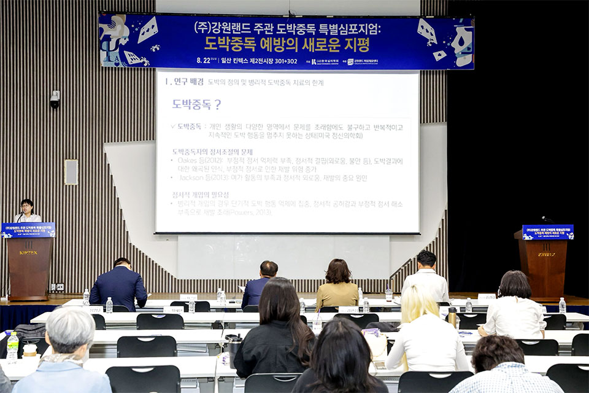
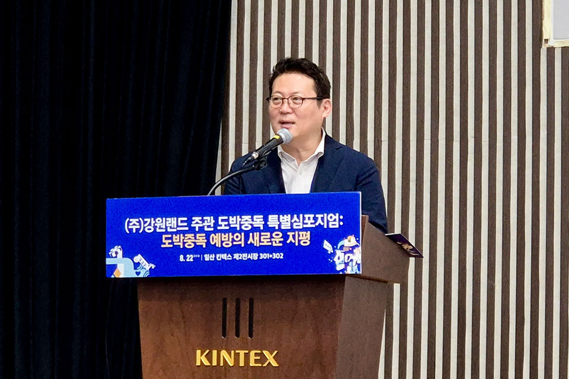
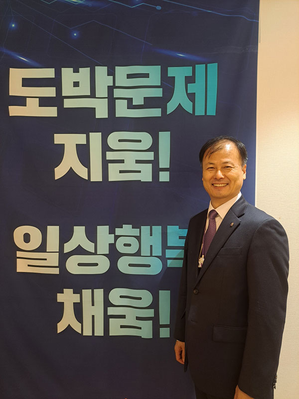

글. 한율 사진.강원랜드 마음채움센터(KLACC)
지난 8월 22일, 일산 킨텍스에서 ‘제79차 한국심리학회 연차학술대회’가 열렸다. 이 자리에서 강원랜드와 한국심리학회는 ‘도박중독 예방 특별 심포지엄: 도박중독 예방의 새로운 지평’을 함께 진행했다. 심리학자와 실무자들은 도박중독 문제를 학문적으로 논의하며, 카지노를 건전한 여가문화로 활용하면서 중독을 예방할 방안을 모색했다.
심포지엄은 먼저 강원랜드 마음채움센터(KLACC)의 사업 소개와 자체 학술연구 발표로 문을 열었다. 한국심리학회 회원 등 약 300여 명이 참석한 가운데, 그동안 현장에서 쌓인 예방·치유 경험이 어떻게 연구로 축적되고 있는지 공유하는 시간이 이어졌다. 특히 KLACC이 도박중독 예방 전담기관으로서, 산업의 건전화와 학술연구를 동시에 끌고 가는 드문 모델이라는 점에서 참석자들의 관심이 쏠렸다. 카지노를 무조건 피해야 할 공간이 아니라, 이용자의 인식과 제도를 바꾸어 ‘위험을 관리하는 여가공간’으로 전환하겠다는 문제의식이 이번 심포지엄 전반을 관통했다.

학술연구 발표 세션에서는 KLACC 조상희 상담전문위원이 ‘명상캠프가 도박중독자 정서조절과 단도박 의지에 미치는 영향’을 주제로 강원랜드와 카이스트가 함께 진행한 공동연구 결과를 소개했다. 명상과 치유 프로그램이 실제로 정서 조절 능력을 높이고, 도박을 끊겠다는 의지를 강화하는지를 과학적으로 검증한 연구로, 이후 KLACC 이용자 보호제도와 프로그램 설계에 직접 반영될 예정이다. 이날 현장에서는 이 연구를 포함해 총 6건의 우수논문이 시상대에 올랐다. 도박중독 관련 데이터와 개입 방법이 단발성 사례에 그치지 않고, 논문과 자료로 남아 국내 연구의 밑거름이 되고 있다는 점에서 의미가 크다. 발표된 논문과 자료는 향후 강원랜드 마음채움센터와 한국심리학회 공식 홈페이지에 게재돼, 관련 연구자와 현장 실무자들이 함께 참고할 수 있는 공공 자원으로 제공될 예정이다.

심포지엄 후반부에는 인지심리학자로 잘 알려진 김경일 아주대학교 교수가 특강을 맡아 ‘인지과학에서 바라보는 도박 행동, 성취를 만들어낸 역량이 위험요인이 되는 이유’를 주제로 강연을 진행했다. 김 교수는 목표 지향성, 집중력, 도전 욕구처럼 보통은 성취를 이끄는 능력들이 특정 환경에서는 오히려 도박에 몰입하게 만드는 위험요인이 될 수 있다고 짚었다. 단순히 ‘의지가 약해서’가 아니라, 사람의 인지 구조와 성향이 어떻게 도박 행동과 맞물리는지 설명하면서, 카지노를 여가·레저 활동으로 이용하기 위해서는 자기 이해와 인지적 거리 두기가 필수라는 메시지를 전했다. 이를 통해 도박문제를 도덕이나 의지의 문제가 아닌, 과학적으로 이해하고 설계해야 할 행동 패턴으로 바라보는 관점 전환이 강조됐다.
강원랜드 마음채움센터는 도박중독 예방 전문기관으로서 국내 학술연구
저변을 넓히고, 사행산업 중독예방 문제에 선도적인 역할을 하겠다는
목표를 세우고 있다. 강원랜드는 이미 한국심리학회와 업무협약을 맺고,
‘제1회 강원랜드 중독예방 포럼’을 개최하는 등 정책·연구·현장 실천을
잇는 다양한 예방 활동을 이어오고 있다. 이번 심포지엄 역시 이러한 흐름
속에서 마련된 자리로, 현장 프로그램에서 나온 경험을 연구로 정리하고,
다시 제도와 이용자 보호 장치로 되돌려주는 선순환 구조를 강화하는
시도라 할 수 있다.
도박중독 예방은 더 이상 한 기관이나 개별 상담실의 노력만으로 해결할 수
있는 문제가 아니다. 산업과 학계, 정책과 현장이 함께 인식을 바꾸고,
데이터를 축적하며, 과학적 근거를 바탕으로 실질적인 개입을 설계해야
한다. 일산 킨텍스에서 열린 이번 특별 심포지엄은 도박을 둘러싼 시선을
‘단순한 위험’에서 ‘관리 가능한 여가’로 전환하고, 그 과정에 심리학과
인지과학, 명상·치유 프로그램이 어떻게 기여할 수 있는지 보여준
첫걸음이었다.

막중한 책임이 따르는 자리를 맡게 되어 무거운 책임감을 느끼고 있습니다. 그동안 도박문제 예방과 치유 현장에서 쌓아온 경험을 바탕으로, 마음채움센터가 우리나라를 대표하는 최고의 도박문제 예방치유전문기관으로 거듭날 수 있도록 최선을 다하겠습니다. 마음채움센터는 다른 기관과 비교할 때 월등한 인력과 조직을 갖추고 있는 만큼 그에 걸맞은 전문성과 성과를 만들어내는 것이 무엇보다 중요하다고 생각합니다. 이용자 보호와 과몰입 예방이라는 본연의 역할에 더욱 집중하면서 현장 중심의 실효성 있는 정책과 프로그램을 통해 사회적 책임을 한층 더 강화해 나가겠습니다.
마음채움센터의 가장 큰 차별점은 ‘예방’에 분명한 초점을 두고 있다는 것입니다. 다른 상담 기관들이 중독 상태의 회복과 치유를 목표로 하는 것과 달리, 마음채움센터는 이용자가 문제 단계로 넘어가기 이전에 과몰입을 예방하고 위험을 낮추는 역할에 중심을 둡니다. 즉, 카지노에 방문하는 이용자들이 스스로 게임행동을 조절하고, 과도한 몰입으로 이어지지 않도록 선제적인 상담과 프로그램을 제공하는 차별화된 역할을 수행하고 있다는 점이 가장 큰 차이점이라고 할 수 있습니다.
비전 실현의 핵심인 ‘상담 전문성 고도화’를 위해 동기강화면담(MI)과 인지행동치료(CBT) 중심의 중독 상담 표준기법을 현장에 정착시키고 상담사 역량을 높이는 데 주력하고 있습니다. 현장 특성에 맞는 전문 개입 모델을 구축 및 학술적으로 검증하는 연구를 병행하고, 심리학회 등 전문 학술 단체와의 교류를 통해 시너지를 창출할 계획입니다. 아울러 마음채움센터가 도박문제 예방·치유 분야에서 전문성과 신뢰도를 갖춘 기관으로 자리매김하도록 체계적인 전문성 강화 전략을 추진하겠습니다.
AI 기술은 앞으로 이용자 보호 정책의 정밀도와 실효성을 높이는 핵심 수단이 될 것입니다. 출입 빈도, 이용 시간, 행동 패턴, 문제군 선별 결과 등 다양한 데이터를 종합적으로 분석해 과몰입 위험 가능성이 높은 이용자를 조기에 예측하고, 보다 선제적인 예방 개입이 이뤄질 수 있도록 하는 것이 기본 방향입니다. 단순한 사후 관리가 아니라, 위험 신호 감지 이전 단계에서 맞춤형 상담과 이용자 보호 제도를 연계하는 체계를 구축하여, 개인의 자율성을 존중하면서도 과학적이고 체계적인 이용자 보호 시스템을 실현해 나갈 계획입니다.
카지노 고객 과몰입 예방의 핵심은 ‘사후 개입’이 아닌 ‘사전 예방’이며, AI 기반으로 과몰입 위험 신호를 조기에 포착하여 상담과 이용자 보호 제도로 연계하는 체계를 강화할 계획입니다. 또한 카지노가 ‘건전한 여가와 놀이 문화의 공간’이라는 인식을 정착시키는 것이 매우 중요하다고 생각합니다. 스스로 게임행동을 조절하고 책임 있게 즐기는 문화가 자리 잡을 수 있도록 예방 교육과 인식 개선 활동을 지속적으로 확대해 나가겠습니다. 궁극적으로는 고객, 직원, 제도가 함께 변화하는 구조를 통해 과몰입을 예방하고, 카지노가 건강한 레저 문화로 자리매김할 수 있도록 하겠습니다.
과거 야구장은 소란스럽고 다소 거친 분위기의 공간으로 인식되던 시기도 있었습니다. 그러나 지금은 가족이 함께 찾는 대표적인 건전한 여가 문화 공간으로 자리 잡았습니다. 이와 같은 변화처럼 카지노도 ‘선용(善用)되는 문화’로 정착할 수 있다고 생각합니다. 이를 위해 고객뿐 아니라 카지노 환경까지 함께 개선할 수 있는 구조를 만들어 가고자 합니다. 카지노가 ‘건전한 레저’로 인식되는 환경을 구축해 나가는 것이 마음채움센터의 최종 목표입니다.